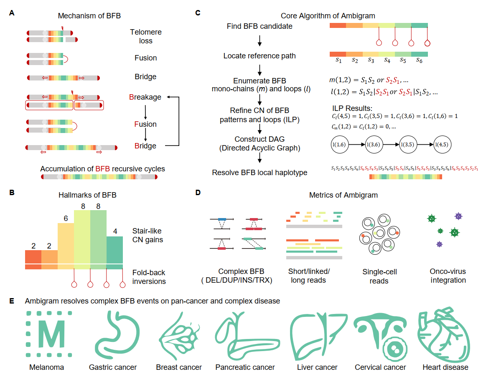
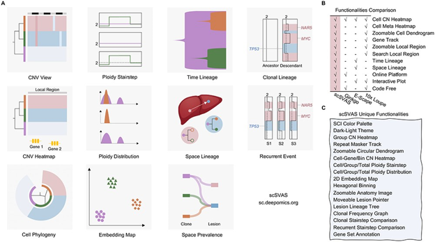
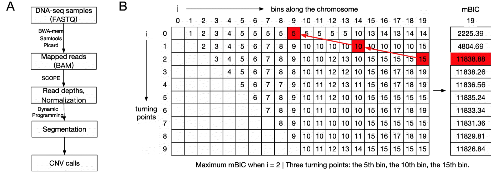

|
Chaohui Li (李朝辉)
Research Assistant City University of Hong Kong Email: chaohuili3-c [at] my.cityu.edu.hk CV • GitHub |
|
About
|
I am a research assistant in the Department of Computer Science at City University of Hong Kong, supervised by Dr. Shuai Cheng Li.
I received my Bachelor's degree in Computer Science from City University of Hong Kong, where I am fortunate to work in DeepOmics Lab led by my current supervisor.
|
News
Research
|
 |
Zero in on complex breakage-fusion-bridge genome rearrangement |
|
 |
Somatic variant analysis suite: copy number variation clonal visualization online platform for large-scale single-cell genomics |
|
 |
SCYN: single cell CNV profiling method using dynamic programming |
Teaching
|
Student Teaching Assistant, CS2310: Computer Programming - City University of Hong KongSpring 2019 - Spring 2021 |
Selected Awards
Miscellaneous
|
I like jogging and hiking. I am also a football fan of Real Madrid CF.
|